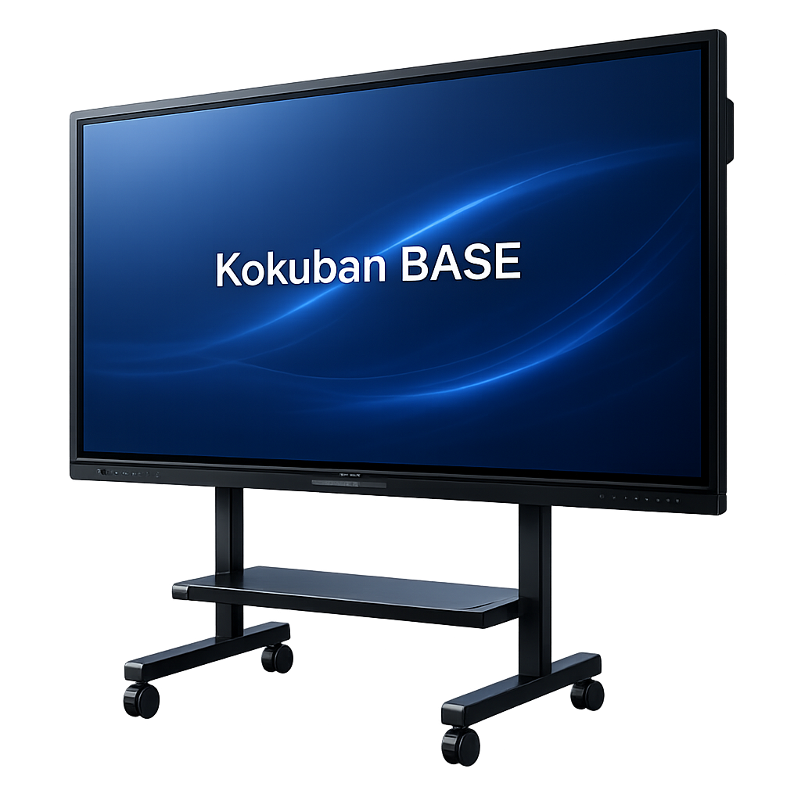
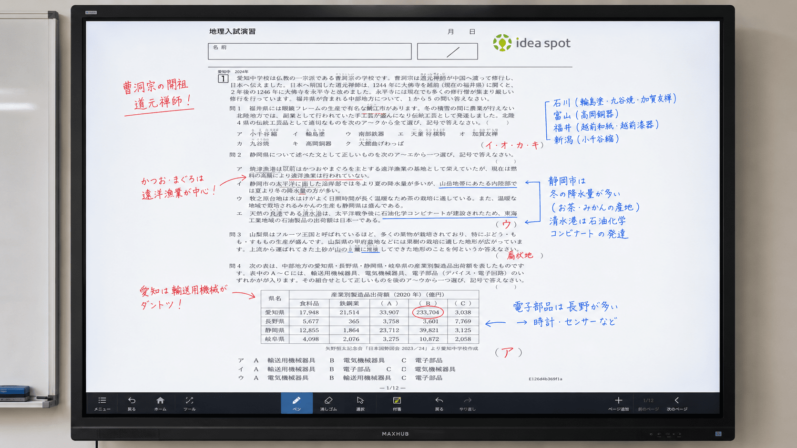
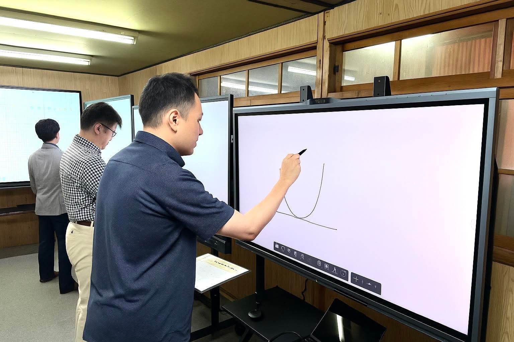

.png?fit=crop&w=480&h=270&q=80)

予算に合わせて
最適な一台を提案
ご予算と必要な機能を整理し、無理のない選び方をご案内します。

FOR EDUCATIONKokuban BASEでできること
私たちは、教育機関専門の電子黒板窓口です。授業スタイルと教室に合う1台の選定から、
見積もり・販売・設置、導入後の活用まで一括で支援します。
Kokuban BASEの製品には、授業をもっと創造的に、スムーズにする標準機能を搭載しています。

運営会社は2016年創業の学習塾・株式会社idea spot。
ご相談を担当するのは、自社の中学受験塾（会員制難関指導専門塾elio）で2020年から電子黒板を使い続けてきた現役講師・教室運営者（編集部紹介）。授業スタイルや現場の課題をお聞きし、必要な機能や機種、無理のない導入方法までまとめてご提案します。
無料で相談する› オンライン・お電話でもご相談いただけます。
ご予算と必要な機能を整理し、無理のない選び方をご案内します。

メーカーや機能の違いを、現場目線で分かりやすく比較します。

導入後に使える授業イメージまで、具体的にご相談いただけます。
機種選定から比較・設置のご相談まで、最適な導入をサポートします。
教育現場で実績のある電子黒板ブランドを、公開の編集ポリシー（比較基準・中立性の開示）に基づいて比較・ご提案します。
Kokuban BASE からのお知らせ
導入前の不安や費用、設置方法などをまとめています。
電子黒板の選び方や活用術をご紹介します。